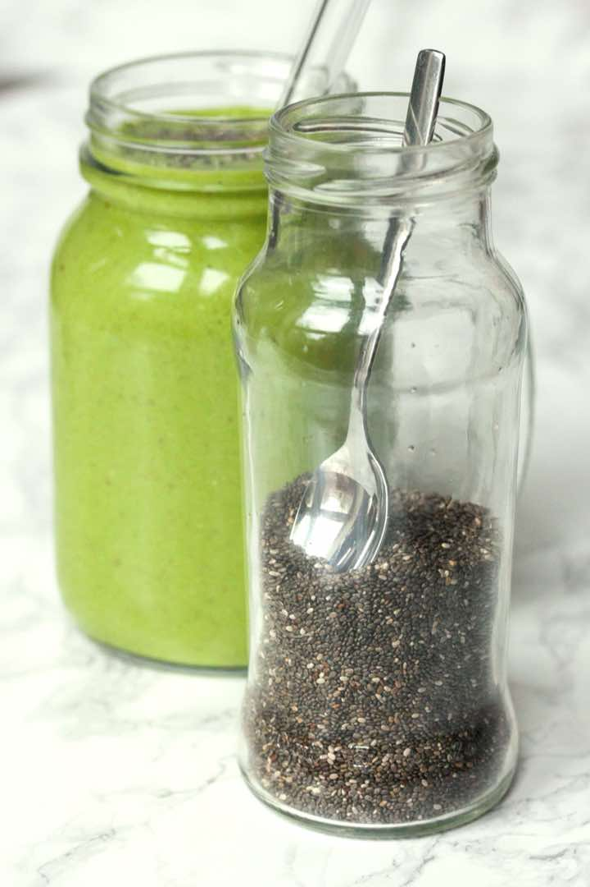

Green Avocado Smoothie with Chia Seeds
Breakfast
Servings1 smoothie
PrepPT0S
CookPT0S

Ingredients
- 1/2 avocado
- 1 banana (frozen)
- 1 cup spinach (raw, tightly packed if measured in cups)
- 1 tsp chia seeds
- 2 cups almond milk
- 1 tbsp agave syrup ( or sweeter of your preference)
- 1/2 tsp vanilla essence
Directions
- Place all ingredients in a blender and process until perfectly smooth.
Source
https://thegreedyvegan.com/green-avocado-smoothie-with-chia-seeds/
This page includes Schema.org Recipe structured data for recipe importers.